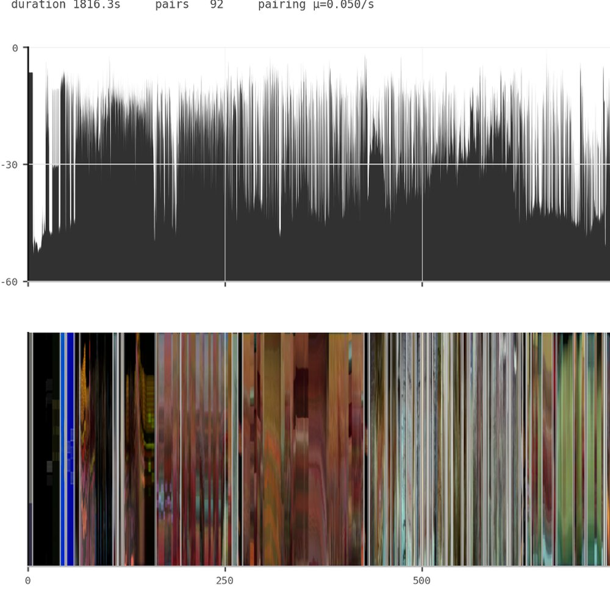
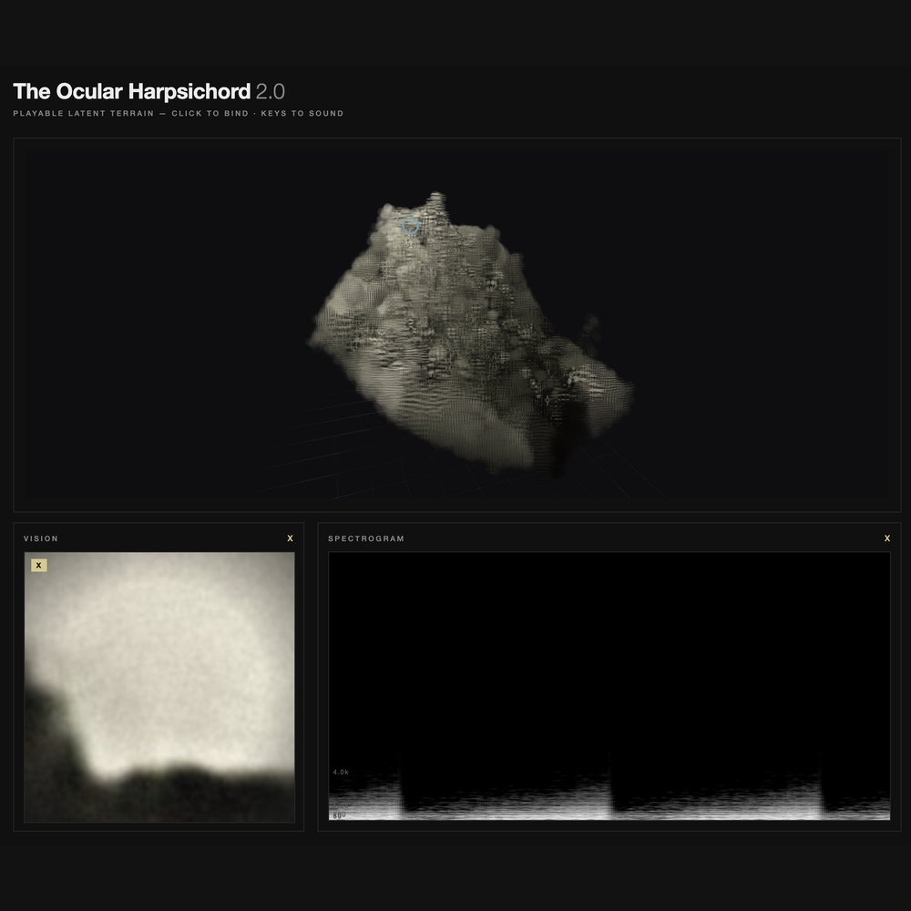

Audiovisual Aesthetics in Formation
Comparative and Computational Analysis of Transatlantic Television Style, 1970–1989
How did the aesthetics of television come to define the way we perceive audiovisual media today? The project examines the history of crossmodal alignment, the interplay between sound and image, across Swedish and American television between 1970 and 1989.
It explores how sound and image together shaped stylistic conventions in genres such as documentary, children’s programming and drama. Combining variational autoencoders and signal analysis with historical interpretation, it traces how cultural, institutional and technological factors influenced the form of television in two contrasting broadcasting environments.
The project is carried out in collaboration with the American Archive of Public Broadcasting and the Swedish National Archives.


- Role
- Postdoctoral fellow and project leader
- Period
- 2025–2028
- Institutions
- metaLAB (at) Harvard, GRIDH University of Gothenburg, American Archive of Public Broadcasting, Swedish National Archives
- Funding
- Swedish Research Council